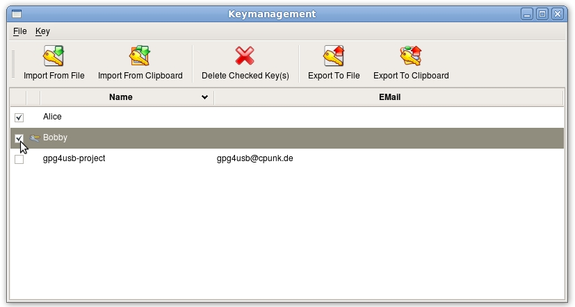
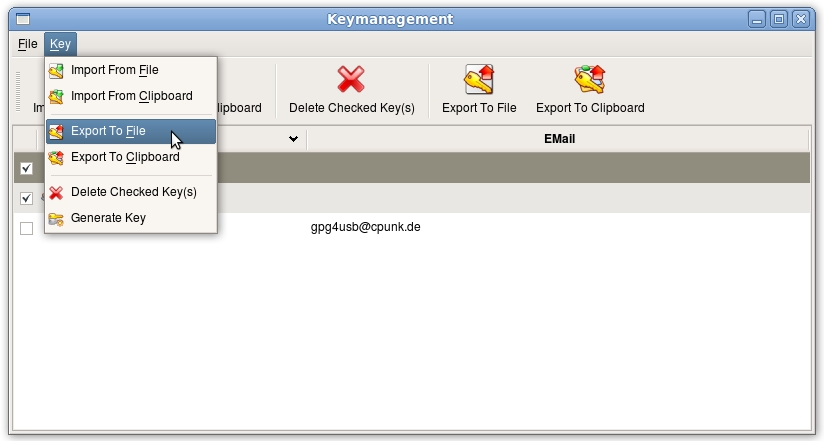
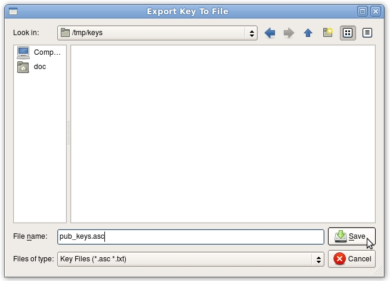

There are three respectively four steps for exporting public keys. We assume, that Bobby wants to export Alice's and his key to give it to Charly, so that he can encrypt messages and files to them.
First Bobby opens the key management through the toolbar.
Secondly he checks Alice's and his own key.

Now he browses through the menu key -> export to file (respectively key -> export to clipboard). If he chooses to export the files to clipboard, he's finished now. Otherwise the next step follows. Alternatively he can choose the export through the toolbar.

Now he chooses the file to store the keys to.

NOTE: To give your public key to someone else, you also can append the key to the text in the editor-field through the context menu in the keylist.